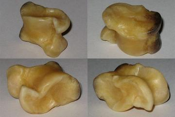
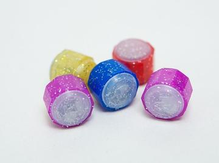
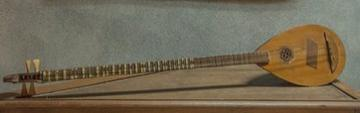
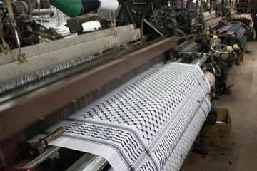
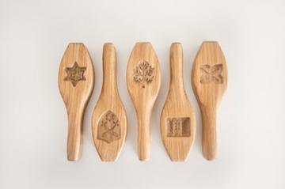
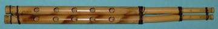
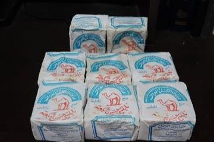
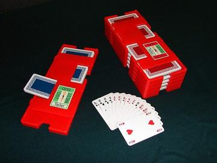

Home / Deep Past and First Games / Mesopotamia, Levant and Arabia
Encyclopedia ID 1010
Zarzir
Also known as knucklebones
A jacks-style game played by tossing and catching animal ankle bones.
Heritage note
Part of the living heritage of Palestine.
Origins
Usually placed in the era of Deep Past and First Games (before about 3000 BCE), although its exact origins are uncertain, within the cultural world of Mesopotamia, Levant and Arabia.
Sources
Related entries


Jacks
El Salvador · Dexterity and skill gamesJacks, Dandy Shandy, ring games
Jamaica · Dexterity and skill games
More from Palestine

Buzuq Long-Neck Lute
Lebanon +2 · Musical instrumentsPlay preview · in the String Music of the World app
Keffiyeh Pattern Loom
Palestine · Crafts and making

Mijwiz Double Clarinet
Lebanon +3 · Musical instrumentsPlay preview · in the Music & Dance of the World app
Nabulsi Soap Tower
Palestine · Crafts and making